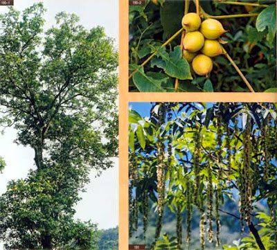

1. Đặc điểm hình thái
chò đãi là loài cây gỗ nhỡ, có thể cao tới 30m, đường kính 0,8m. Đây là một loài cây thường xanh phân bố trong rừng mưa nhiệt đới hoặc cận nhiệt đới thường xanh, ở độ cao từ 600 - 1.000m trên núi đá vôi. Thân cây nhẵn. Lá kép lông chim một lần lẻ có kích thước 30–50 cm, có từ 7-11 lá chét. Lá chét có chất liệu bóng gần da, mép lá chét nguyên (đặc điểm phân biệt với các loài thuộc chi Mạy). Hoa đơn tính, nhóm cụm hoa đực thường mọc ở nách lá có từ 5-8 cụm hoa đực, mỗi cụm hoa đực là hoa tự hình bông đuôi sóc. Hoa cái thường mọc ở đầu cành. Quả hình cầu hoặc hình trứng dài 6–8 cm rộng 4–6 cm, có mỏ nhỏ ở đỉnh quả. Hoa ra vào tháng 3-4, quả cho vào tháng 8-9.

2. Phân bố
Vĩnh phúc (Tam Đảo), Ninh Bình (Cúc Phương), Thanh Hóa (Lang Chánh).